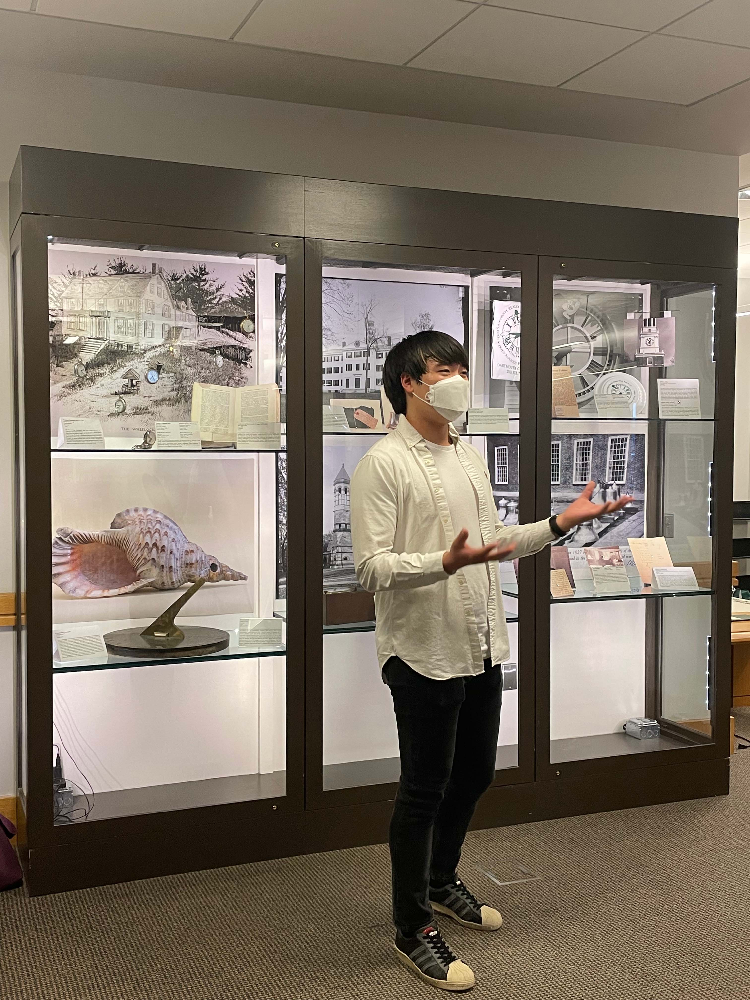

Projects
Research Projects
The John Milton reading room: Researching intuitive UI and web development

Green Time, 1776 - 1966
- Curated by Ryan Yong with Rich Kremer, Emeritus Professor of History
- Scientific Instrument Exhibition on 4th floor Berry Library
- From 22W to 22S
- Opened on June 1, 2022
Software Projects
- Pong: Based on the arcade game Pong
- Tiny Search Engine: Crawler, indexer, and querier
- Nuggets 2: Based on the computer game Rogue
- My personal website: Here!